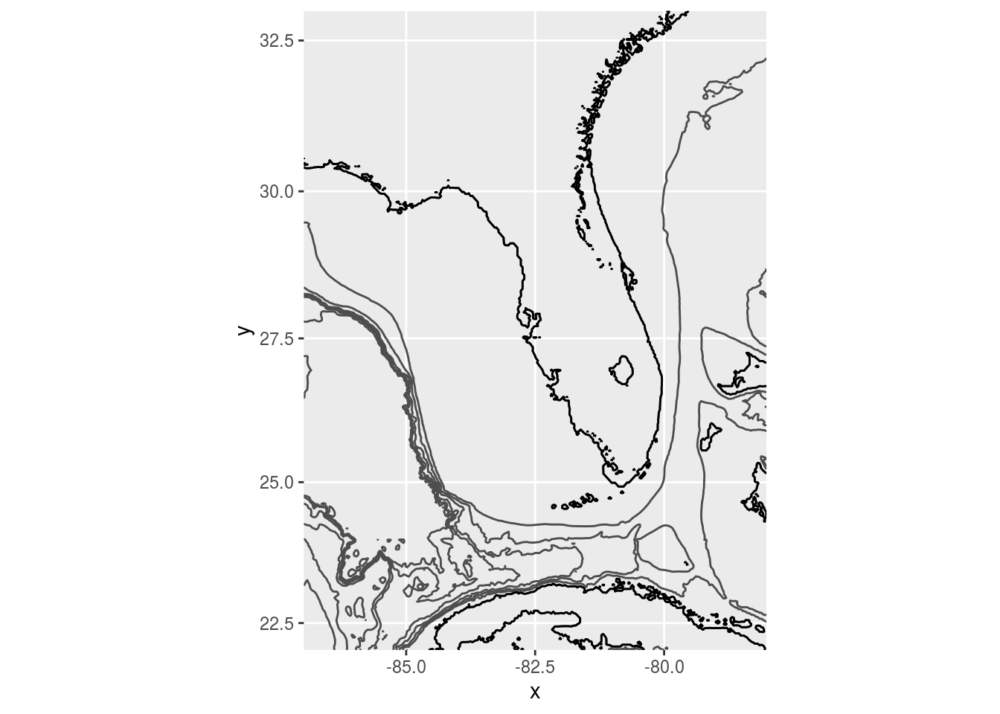
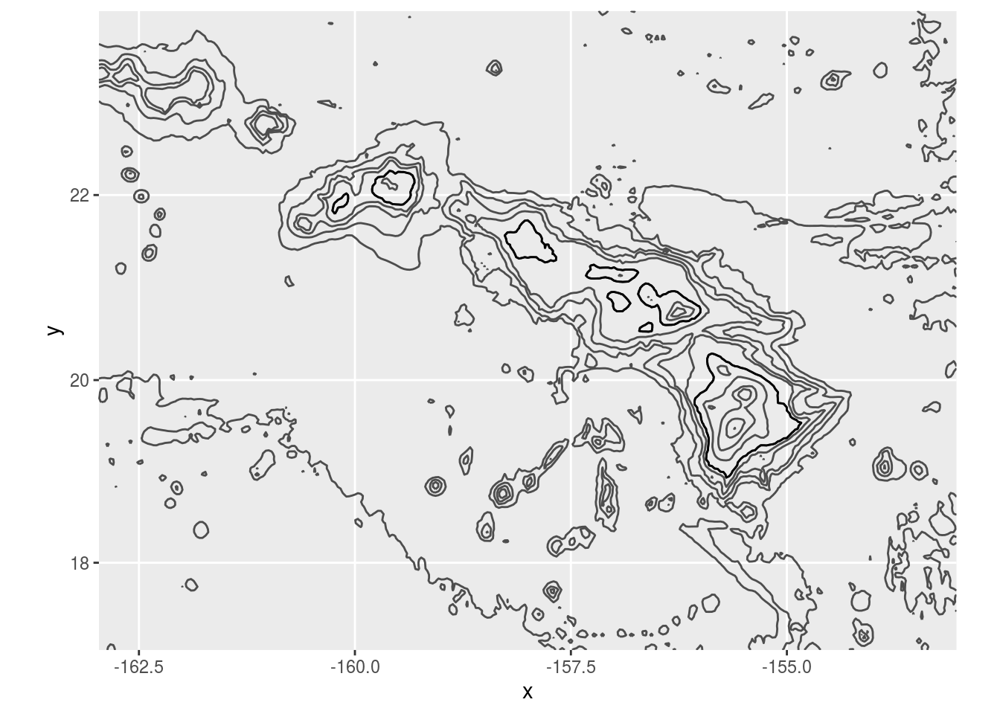
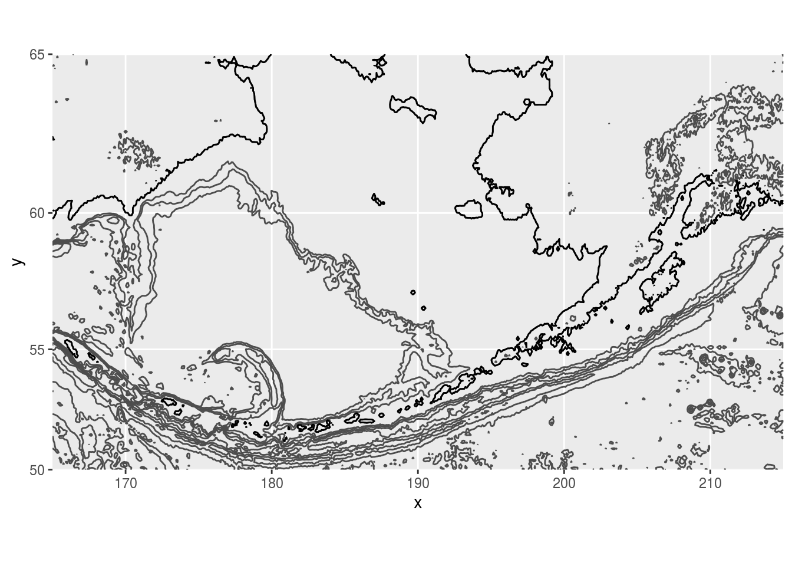

The marmap package provides tools and data for visualizing the ocean floor. Here is an example contour plot of marmap’s florida dataset.


image(volcano, col = viridis(200))Maunga Whao, Auckland, NZ
image(volcano, col = viridis(200, option = "A"))Maunga Whao, Auckland, NZ
image(volcano, col = viridis(200, option = "B"))Maunga Whao, Auckland, NZ
image(volcano, col = viridis(200, option = "C"))Maunga Whao, Auckland, NZ
ls *.Rmd## 1-example.Rmd
## 10-presentation.Rmd
## 11-dashboard.Rmd
## 2-chunks.Rmd
## 3-inline.Rmd
## 4-languages.Rmd
## 5-parameters.Rmd
## 6-tables.Rmd
## 7-markdown.Rmd
## 8-outputs.Rmd
## 9-notebook.Rmd
## about.Rmd
## index.Rmd
## testing.RmdThis chunk executes bash code.
x = 'hello, python world!'
print(x.split(' '))## ['hello,', 'python', 'world!']This chunk executes python code.
| mpg | cyl | disp | hp | drat | wt | qsec | vs | am | gear | carb | |
|---|---|---|---|---|---|---|---|---|---|---|---|
| Mazda RX4 | 21.0 | 6 | 160 | 110 | 3.90 | 2.620 | 16.46 | 0 | 1 | 4 | 4 |
| Mazda RX4 Wag | 21.0 | 6 | 160 | 110 | 3.90 | 2.875 | 17.02 | 0 | 1 | 4 | 4 |
| Datsun 710 | 22.8 | 4 | 108 | 93 | 3.85 | 2.320 | 18.61 | 1 | 1 | 4 | 1 |
| Hornet 4 Drive | 21.4 | 6 | 258 | 110 | 3.08 | 3.215 | 19.44 | 1 | 0 | 3 | 1 |
| Hornet Sportabout | 18.7 | 8 | 360 | 175 | 3.15 | 3.440 | 17.02 | 0 | 0 | 3 | 2 |
It is very easy to make tables with knitr’s kable function.